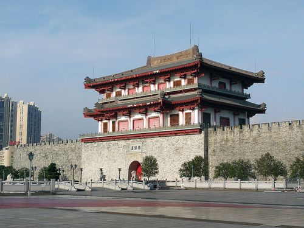

揭阳楼，是揭阳市的象征，位于广东省揭阳市区东入口，邻榕江，取法汉代形式，高 达38米，有望成为具有历史象征意义的城市地标；加上被确定作为新市规划和历史文化展示功能用途，它的建成，将激励揭阳六百万英雄儿女，发扬优秀文化传统，创造更加辉煌的未来。
经过几年的奋斗拼搏，揭阳的市政建设日益完善，市容市貌发生翻天覆地的变化，特色城市已初步形成。于是加强公共建筑与文化广场的建设，就成了广大市民的迫切需求。
是凝聚人心的需要。
揭阳幅员广阔，人口众多，经过不断的磨合、交流、互助，关系日益融洽。树立一座用大家双手共筑的地标，用以强化“大揭阳”的和衷共济，“统民情之归依”，意义十分深远。
